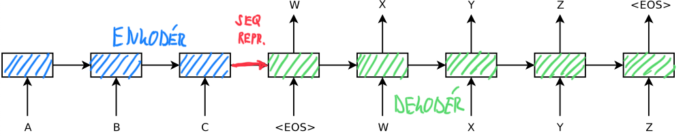
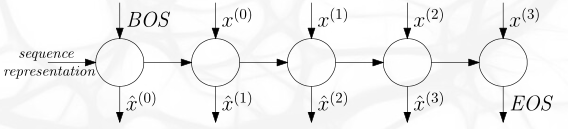
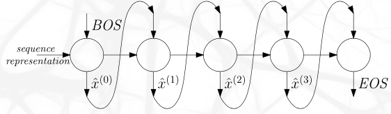
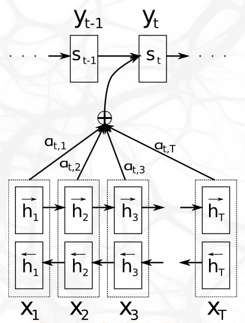
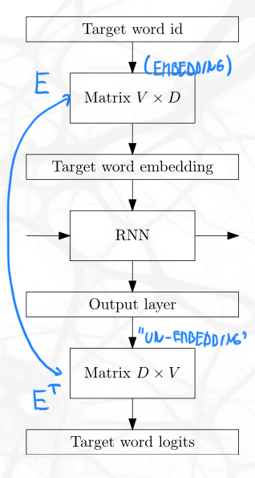

Draw a sequence-to-sequence architecture for machine translation, both during training and during inference (without attention). [5]
Obecně je to síť složená ze dvou částí.

Během tréninku se využívá teacher forcing, v dekodéru dostáváme na vstupu (W, X, Y, Z) gold sekvenci.

Během inference gold sekvenci nemáme, takže buňce feedujeme výstup předchozí buňky. Tomu se říká autoregressive decoding.

Konkrétně na výstupu děláme FC embedding, a pošleme ho do softmaxu (přímo výstup) a do argmaxu (vstup následující buňky).
Někdy se kombinují už při trénování oba postupy, abychom i při trénování někdy viděli nesprávné vstupy (které jinack s čistým teacher forcingem nikdy nevidíme).
Draw a sequence-to-sequence architecture for machine translation used during training, including the attention. Then write down how exactly is the attention computed. [10]
Oproti původnímu seq-to-seq jsou dvě změny.
Konkrétně máme novou sadu trénovatelných vah, \(V\) a \(W\), a v \(i\)-tém kroce dekodéru definujeme \[ e_{i j}=\boldsymbol{v}^{\top} \tanh \left(\boldsymbol{V} \boldsymbol{h}_{j}+\boldsymbol{W} \boldsymbol{s}_{i-1}+\boldsymbol{b}\right), \] tedy promítneme minulý stav \(s_{i-1}\) a \(j\)-tý vstup \(h_j\) do stejně velké matice, abychom je mohli sečíst. Následně znormalizujeme tento výsledek tak, abychom dostali opravdové váhy \[ \boldsymbol{\alpha}_{i}=\operatorname{softmax}\left(\boldsymbol{e}_{i}\right), \] zadefinujeme kontextové vektory jako vážený průměr jednotlivých vstupů \[ \boldsymbol{c}_{i}=\sum_{j} \alpha_{i j} \boldsymbol{h}_{j}, \] a nakonec tento kontext přidáme do vstupu buněk \[ \boldsymbol{s}_{i}=f\left(\boldsymbol{s}_{i-1}, \boldsymbol{y}_{i-1}, \boldsymbol{c}_{i}\right). \] Značení je z tohoto obrázku.

Explain how can word embeddings tying be used in a sequence-to-sequence architecture. [5]
Na embedding vstupních slov a na embedding výsledných embeddingů zpět do slov se používají stejné matice (jen ta druhá je transponovaná).

Write down why are subword units used in text processing, and describe the BPE algorithm for constructing a subword dictionary from a large corpus. [5]
Když máme generovat slova mimo slovník, nemůžeme použít character-level embeddingy; respektive můžeme, ale nefunguje to dobře, protože generovat nová slova po znacích je náročné. Proto se ke generování “nových” slov používají místo znaků delší kusy slov.
Write down why are subword units used in text processing, and describe the WordPieces algorithm for constructing a subword dictionary from a large corpus. [5]
Když máme generovat slova mimo slovník, nemůžeme použít character-level embeddingy; respektive můžeme, ale nefunguje to dobře, protože generovat nová slova po znacích je náročné. Proto se ke generování “nových” slov používají místo znaků delší kusy slov.
Pinpoint the differences between the BPE and WordPieces algorithms, both during dictionary construction and during inference. [5]
V BPE konstruujeme slovník od písmen, spojujeme nejčastější dvojice. Ve WordPieces jdeme rovněž od písmen, ale spojujeme ty dvojice, které nejvýše zvednou unigram probability celého korpusu. To bude často ta stejná dvojice jako v BPE, ale ne vždy — bereme totiž v úvahu i původní počet výskytů těch jednotlivých podslov.
Během inference musíme v BPE konstruovat slovník vždy ve stejném pořadí, protože při tréninku s tím takto počítáme. Ve WordPieces se i při tréninku rozdělení textu na podslova stále mění (je to v bodě (3)), takže nám to při inferenci nevadí.
Jinými slovy, BPE je pomalejší v inferenci, WordPieces v konstruování slovníku.